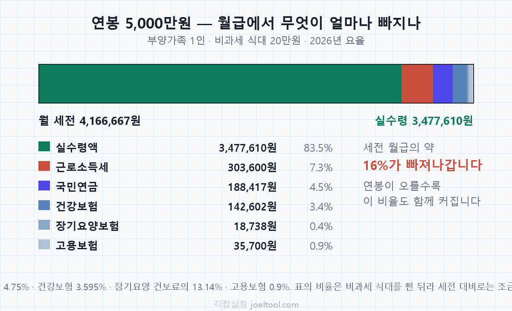
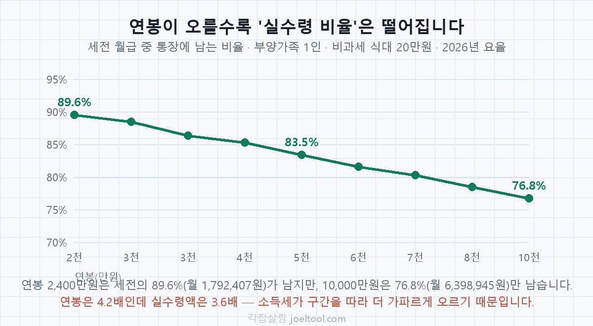
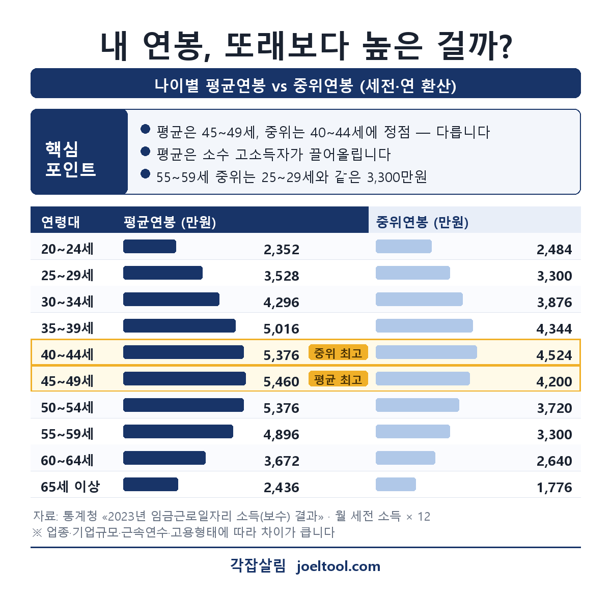

지금 연봉과 희망 연봉이 어떻게 되나요?직군과 두 연봉을 넣으면 예상 월 실수령액이 바로 나옵니다.
현재 몇 년차인가요?직군·연차를 기준으로 내 연봉이 어느 위치인지 계산합니다.
내 연봉 포지션
제안받은 연봉이 있나요?이직·오퍼 받은 연봉(총액)을 넣으세요. 없으면 건너뛰어도 됩니다.
지금 vs 제안, 어떤 선택이 좋을까
연봉별 월 실수령액 표 (2026년 기준)
연봉 3,000만원의 월 실수령액은 약 2,212,800원, 5,000만원은 약 3,477,610원, 8,000만원은 약 5,233,601원입니다. 아래 표는 위 계산기와 같은 공식으로 계산한 값입니다.
| 연봉 | 월 세전 | 4대보험 | 소득세 | 월 실수령액 | 연 실수령액 |
|---|---|---|---|---|---|
| 2,400만원 | 2,000,000원 | 174,913원 | 32,680원 | 1,792,407원 | 21,508,885원 |
| 2,700만원 | 2,250,000원 | 199,206원 | 48,190원 | 2,002,604원 | 24,031,244원 |
| 3,000만원 | 2,500,000원 | 223,500원 | 63,700원 | 2,212,800원 | 26,553,602원 |
| 3,300만원 | 2,750,000원 | 247,793원 | 99,685원 | 2,402,522원 | 28,830,261원 |
| 3,600만원 | 3,000,000원 | 272,087원 | 135,670원 | 2,592,243원 | 31,106,919원 |
| 4,000만원 | 3,333,333원 | 304,478원 | 183,650원 | 2,845,205원 | 34,142,464원 |
| 4,500만원 | 3,750,000원 | 344,967원 | 243,625원 | 3,161,408원 | 37,936,895원 |
| 5,000만원 | 4,166,667원 | 385,456원 | 303,600원 | 3,477,610원 | 41,731,326원 |
| 5,500만원 | 4,583,333원 | 425,945원 | 377,700원 | 3,779,688원 | 45,356,257원 |
| 6,000만원 | 5,000,000원 | 466,434원 | 451,800원 | 4,081,766원 | 48,981,187원 |
| 7,000만원 | 5,833,333원 | 547,413원 | 600,000원 | 4,685,921원 | 56,231,049원 |
| 8,000만원 | 6,666,667원 | 623,799원 | 809,267원 | 5,233,601원 | 62,803,211원 |
| 9,000만원 | 7,500,000원 | 665,194원 | 1,018,533원 | 5,816,273원 | 69,795,272원 |
| 10,000만원 | 8,333,333원 | 706,589원 | 1,227,800원 | 6,398,945원 | 76,787,334원 |

실수령액에서 빠지는 항목
세전 월급에서 아래 사회보험료와 근로소득세를 뺀 금액이 실수령액입니다.
- 국민연금 과세대상 소득의 4.75% (상한 있음)
- 건강보험 3.595%
- 장기요양보험 건강보험료의 13.14%
- 고용보험 0.9%
- 근로소득세·지방소득세 연봉 구간에 따라 달라집니다
연봉이 두 배여도 실수령액은 두 배가 아닙니다

연봉이 3,000만원에서 6,000만원으로 두 배가 되어도 월 실수령액은 2,212,800원에서 4,081,766원으로 약 1.8배만 늘어납니다. 소득세가 구간을 따라 더 가파르게 오르기 때문입니다. 이직 제안을 비교할 때 연봉 인상액이 아니라 실수령액 차이로 따져야 체감과 맞는 이유입니다.
내 연봉, 또래보다 높은 걸까 — 나이별 평균 vs 중위
평균연봉은 45~49세에 정점(5,460만원)을 찍고, 중위연봉은 그보다 이른 40~44세에 정점(4,524만원)을 찍습니다. 두 정점이 다른 이유는 평균이 소수 고소득자에게 끌려 올라가기 때문입니다. 내 위치를 볼 때는 평균보다 중위값이 체감에 가깝습니다.

| 연령대 | 평균연봉 | 중위연봉 |
|---|---|---|
| 20~24세 | 2,352만원 | 2,484만원 |
| 25~29세 | 3,528만원 | 3,300만원 |
| 30~34세 | 4,296만원 | 3,876만원 |
| 35~39세 | 5,016만원 | 4,344만원 |
| 40~44세 중위 최고 | 5,376만원 | 4,524만원 |
| 45~49세 평균 최고 | 5,460만원 | 4,200만원 |
| 50~54세 | 5,376만원 | 3,720만원 |
| 55~59세 | 4,896만원 | 3,300만원 |
| 60~64세 | 3,672만원 | 2,640만원 |
| 65세 이상 | 2,436만원 | 1,776만원 |
55~59세 중위연봉은 25~29세와 같습니다
둘 다 3,300만원입니다. 30년을 일해도 중위값 기준으로는 같은 자리로 돌아옵니다. 평균만 보면 55~59세가 4,896만원으로 25~29세(3,528만원)보다 훨씬 높아 보이지만, 그 차이의 상당 부분은 상위 소수가 만든 것입니다.
자주 묻는 질문
제안받은 연봉이 좋은 건지 어떻게 알아요?
직군·연차가 같은 사람들의 평균 연봉과 비교해 상위 몇 %인지가 1차 기준입니다. 다만 총액만큼 연봉 구성(기본급 vs 성과급)도 봐야 합니다 — 총액이 같아도 기본급이 큰 오퍼가 실질적으로 더 유리합니다. 위 계산기에 지금·제안 연봉을 넣으면 포지션과 함께 어느 쪽이 유리한지 바로 판정해 드립니다.
이직할 때 연봉은 몇 % 올려야 적당한가요?
일반적으로 기본급 기준 2~7% 이상 인상이면 괜찮은 처우로 봅니다. 성과급까지 합쳐 5% 이상 올랐어도 기본급이 그대로라면 다시 협상할 여지가 있습니다. 자세한 판단 기준은 몇 % 불러야 할까에서 정리했습니다.
희망 연봉은 숫자로 써야 하나요, '협의 가능'이라고 써야 하나요?
상황에 따라 다릅니다. 시장 데이터를 근거로 구체적인 숫자를 제시하는 편이 유리할 때가 많지만, 정보가 부족하면 범위나 '협의 가능'으로 여지를 남기는 것도 전략입니다. 희망연봉 작성법에서 상황별로 정리했습니다.
성과급이 포함된 연봉과 기본급만 있는 연봉, 뭐가 더 유리한가요?
총액이 같다면 기본급 비중이 큰 쪽이 유리합니다. 성과급은 실적·평가에 따라 줄거나 없어질 수 있지만 기본급은 확정 금액이고, 다음 이직 협상의 기준점도 기본급이 됩니다. 성과급 vs 기본급에서 더 자세히 다룹니다.
실수령액이 다른 계산기랑 다르게 나오는데 왜 그런가요?
부양가족 수, 비과세 식대 포함 여부, 적용 요율 버전에 따라 결과가 달라집니다. 이 계산기는 1인 가구·비과세 식대 20만 원을 기본 가정으로 계산합니다. 왜 계산기마다 다를까에서 원인을 정리했습니다.
연봉 협상 가이드
이직·협상 전에 읽으면 좋은 글.
협상하기 전에 같이 보세요
- 이직 연봉 협상 가이드제안을 받고 나서 무엇부터 확인해야 하는지 순서대로 정리했어요.
- 협상 실전 문구"조금 더 주세요" 말고, 실제로 통하는 문장을 그대로 가져다 쓰세요.
- 퇴사 타이밍 계산기옮기기로 결정했다면, 퇴직금과 연차를 다 챙기는 퇴사일부터 잡으세요.
이 주제의 가이드 11편
계산 결과만으로 판단이 안 설 때 읽어보세요. 각 글에 근거 법령과 계산 예시를 함께 실었습니다.
- 성과급 vs 기본급, 이직 협상에서 뭐가 더 중요할까같은 연봉이라도 기본급이 큰 오퍼가 유리한 이유.
- 오퍼가 두 개일 때 — 총액이 큰 쪽이 답이 아닌 이유연봉 총액이 큰 오퍼가 항상 유리하지는 않습니다.
- 직군별 평균 연봉 확인하는 법직군·연차별 평균 연봉을 신뢰할 수 있는 공공데이터로 확인하는 법.
- 연봉 협상 실전 예시 문구연봉 협상 이메일·대화에서 바로 쓰는 실전 문구 예시.
- 연봉 협상 타이밍, 언제 꺼내야 유리할까연봉 협상은 타이밍이 절반. 이직 오퍼 단계, 내부 평가 시즌, 성과 직후 등 언제 협상을 시작해야 유리한지 상황별로 정리합니다.
- 통상임금과 평균임금 — 뭐가 다르고 어디에 쓰이나통상임금은 가산수당·연차수당의 기준, 평균임금은 퇴직금의 기준입니다.
- 연봉을 깎겠다는 통보를 받았다면임금 삭감은 원칙적으로 근로자의 동의가 필요하고, 취업규칙 변경이면 근로자 과반수의 동의가 필요합니다.
- 이직 연봉 협상, 몇 % 불러야 할까?이직 연봉 협상에서 몇 %를 제안받아야 좋은지, 제안 연봉을 어떻게 판단하는지, 실수령액을 착각하게 만드는 연봉 구성의 함정까지 실전 가이드.
- 5인 미만 사업장 — 받을 수 있는 것과 없는 것5인 미만이어도 최저임금·주휴수당·퇴직금·해고예고는 적용됩니다.
- 연봉 실수령액, 왜 계산기마다 다를까?같은 연봉인데 실수령액 계산기마다 숫자가 다른 이유 — 비과세 식대, 국민연금 요율, 부양가족 등 '가정의 차이'를 실제 사례로 분석합니다.
- 희망연봉, 숫자로 쓸까 협의가능이라고 쓸까입사지원서·면접에서 희망연봉을 어떻게 써야 유리한지 상황별로 정리합니다.